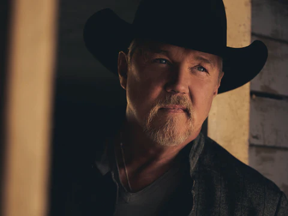

“I’ve got to the point where it’s all up to me now,” says Multi-Platinum Country star Trace Adkins, 25 years into a career filled with bold authenticity and chart-topping smashes. “I can do whatever I want ... and that’s a beautiful place to be.”
In truth, he’s been doing that all along, fusing a booming baritone and commanding stage presence with sounds from all across the Country spectrum – sometimes with a mischievous wink. But on his 13th studio album, The Way I Wanna Go, Adkins takes the idea to heart.
Since his debut in 1996, the larger-than-life star has sold over 11 million albums and charted 20 songs on Billboard’s all genre Hot 100, while catapulting 15 singles into the Top 10 on Billboard’s Hot Country Songs chart. He’s also racked up two billion streams and boasts a reputation for fiery live performance – not to mention his multiple Grammy nominations, awards from the ACM and CMT, and a willingness to think outside the box.
Now, with 25 all-new tracks to celebrate the 25th anniversary of his Dreamin’ Out Loud debut, Adkins brings it all together. Steeped in the cultural melting-pot of his Louisiana upbringing, The Way I Wanna Go finds him leaning in to a lone-wolf spirit, and continuing down the road which made him a shapeshifting member of the Grand Ole Opry.
Produced by Mickey Jack Cones and Derek George and to be released by Verge Records, it touches on all aspects of Adkins’ hit-making career – from profound traditional balladry to clever-Country party anthems. And with a sound that ranges from timeless twang to beat-driven bravado, it brings a who’s who of unpredictable guests along for the ride.
All-star collaborators include Blake Shelton, Luke Bryan, Stevie Wonder on harmonica, Snoop Dogg, Pitbull, Keb’ Mo’ and Melissa Etheridge. And Adkins’ creative craftsmanship is sharper than ever.
“I am at the top of my game right now,” he says with conviction. “I’m better at this than I’ve ever been in my life, and I like the way my voice sounds better now than 25 years ago.”
Smooth, rich and dynamic, that iconic vocal shines on the good-old-days anthem, “Heartbreak Song,” and enjoys the fruits of labor in the peaceful “Where I Am Today.” Others like “Careful Girl” showcase Adkins’ rumbling romantic magnetism – made famous with his first No. 1, “(This Ain’t) No Thinkin’ Thing” – while “Got It Down” stands tall for those who take life by the horns.
Our red-white-and-blue ideals remain intact with “Somewhere In America.” And in “Empty Chair,” Adkins salutes the quiet sacrifice of U.S. service members, tapping the raw emotion that also drove big-picture anthems like “You’re Gonna Miss This.” But the tunesmith also made his name on
irreverent knee-slappers, carving a good-timing niche with hits like 2004’s “Honky Tonk Badonkadonk,” and 2010’s “Hillbilly Bone” (with Blake Shelton).
Here, he revisits the friendship with Shelton on “If I Was a Woman,” sharing a few laughs with his 2021 tour mate. He weaves a rom-com worthy plot in “It’s a Good Thing I Don’t Drink,” while “Where The Country Girls At” combines the party-starting prowess of Luke Bryan and Pitbull. And in what’s sure to be an instant favorite, “So Do the Neighbors” cranks up the volume with rap legend, Snoop Dogg.
“I just remember it was almost the same reaction to the first time I heard ‘Badonkadonk,’” Adkins says of the hip-hop honky tonker. “It made me laugh out loud!”
Adkins further shares, “Never in a million years would I have imagined that I would collaborate on songs with Luke Bryan, Melissa Etheridge, Snoop Dog, Keb’ Mo’, Pitbull, and Blake Shelton...on one album! I even have a song that Stevie Wonder plays harmonica on. So, to have performances by these iconic superstars, from different musical genres, on my 25th-anniversary album is incredibly humbling.”
But it’s “The Way I Wanna Go” which best shows where he’s at, 25 years into his career and still going strong. Delivered with pride and a sense of against-the-odds determination, Adkins cautions that he’s not done yet – he’s loving this chapter of life too much to quit. But when he does bow out, he’ll do it just like he does everything else. On his own terms.
“I love where I’m at, I really do,” Adkins says. “I’ve had the perfect career, and I don’t know where my place is gonna be when the history of what I did is written. But 90 percent of the time, I said what I wanted to say and stuck to my guns, and did what I wanted to do. ... And I’m gonna go out the way I wanna go out.”